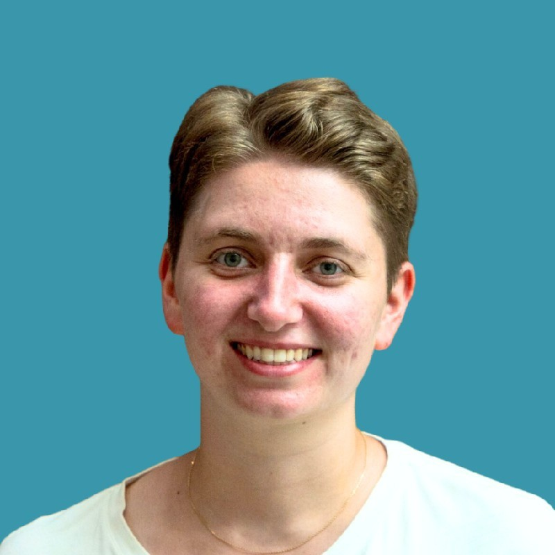

My Resume

Looking for a graduation internship in the tech-industry starting August/September 2024 in business development or project management.
Summary
Result-driven creative head with a passion for uniting teams to solve challenges. I have two years of agile project management and creative problem-solving experience in multicultural teams in a university research group, marketing agency and university projects.
Core Competencies
- Agile project management
- Basic coding skills and understanding
- Data analysis (SPSS, Tableau, Excel)
- Business Research
- Effective Communication
- German (Native)
- English (C2)
- Spanish (B1)
Professional Experience
Degusta Box, Barcelona/Spain (Jan-Aug 2023)
Market Research Specialist
- Planned and executed full-cycle market research campaigns independently
- Consulted food brands on market research activities and achieved B2B client satisfaction scores of 4.5/5 and above
- Executed and initiated a competitor analysis with actionable insights for the management team
- Analysed data using business intelligence software and presented results to B2B clients
Research Group Business Innovation, Venlo/Netherlands (Sep. 2021 - Jan. 2023)
Research Assistent in Food Innovation
- Conducted market analysis and primary research for projects relating to sustainable food production and food innovation
- Presented research results to industry leaders
- Created Instagram content for @researchgroupfontys
- Taught workshops and seminars on sustainable food production
Education
The Complete Web Development Bootcamp 2023
Udemy (Dec. 2023 - Feb 2024)
- Becoming a full-stack web developer
- Learning HTML, CSS, Javascript, Node, React, PostgreSQL, Web3 and DApps
Fontys University of Applied Sciences, BBA (2021-2025
Bachelor of Business Administration - International Business
- Project-based learning environment with real-life case studies (e.g., with a Dutch war museum and the food-tech company Youmeal) in various fields like entrepreneurship, marketing, finance and control, supply chain and HRM.
- Volunteered to be project manager in four university projects that achieved excellent results
- Exchange semester at FPT University in Ho Chi Minh City (Vietnam) focusing on digital marketing and marketing campaign planning
University of Cologne, BA (2015-2020)
Bachelor of Arts in Teaching English and Geography
- One year internship as a teaching assistant in Utah, USA at Foxboro Elementary (2017/18)
Further Information
Contact me on LinkedIn